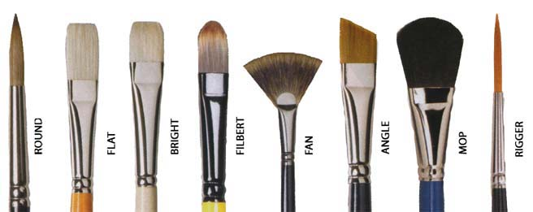

Needed items
On this page i will list all the basis supplies to get started with your painting with a short explanation.
Paints:
Watercolour come in two forms pans and tubes, both have pros and cons.
Pans:
paint in pans
comes as rectangular or circular "cakes" that are put into individual pans, then placed into a palette. they are dry to the touch and are activated by adding water with your brush or a spray bottle.


The advantages of using a pan palette are easier to use when your out on the go and you don't have to worry about leakage.
on the other hand being as small as they are, redipping your brush over and over when paint a large piece is rather tedious.
Tubes:
watercolour also comes in small toothpaste like tubes. you use the by sqeezing out a small amount onto your pallet and diluting with water.

Some of the pros and cons are; tubes are great for doing large washes of colour and as its not in a dry state, you can use it straight out of the tube, giving you more intense colour.
when left to dry on your palette, depending on the brand, when reactivated the paint may lose some of its vibrency.
Brushes:
There are a veriaty of brushes to choose form, but buying them all before you even know how to use one is a huge waste of money. instead, sticking to one or two and learning how to use it properly is best.
For example buy 3 varying sizes of round brushes, and that is enough to geet you started.
